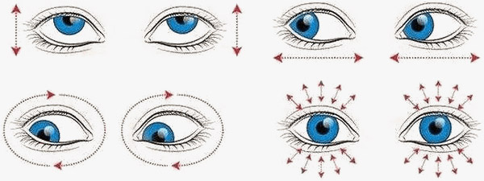
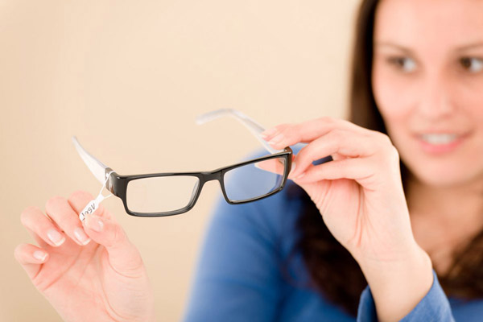
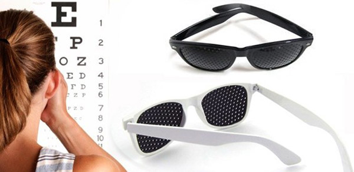
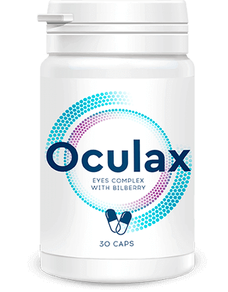

¡Deja de creer todo lo que dicen! ¡La visión solo se puede restaurar con métodos modernos!
“He trabajado con personas con problemas de visión durante muchos años. Y casi todos los días escucho preguntas como “¿Si tomo mucha vitamina A, mi visión se recuperará?”, o “Hago gimnasia visual, ¿por qué mi condición solo empeora?”, o “Nunca he tenido problemas de visión, ¿por qué comprobarlo? ¡Entonces comencé a ver mal, y por eso vine a verlo!” ¡Es terrible que la gente no sepa la verdad y crea en todo tipo de tonterías!”
Alfredo Ríos decidió hoy abrirle los ojos a la gente y desmentir los mitos más populares sobre la restauración ocular.
Para restaurar la visión, debe hacer ejercicios oculares
Esto es en parte cierto, en parte no. ¿Qué utilidad tiene la gimnasia? Mejora: la circulación sanguínea en los ojos, la nutrición de la retina y el entrenamiento muscular. PERO NO RESTAURA la mala visión.
Esto solo previene de la discapacidad visual. Con los problemas existentes, la gimnasia solo puede suspender ligeramente el desarrollo del problema. Por ejemplo, después de los 40 años, las personas suelen tener dificultades para ver a corta distancia. En esta situación, los problemas de visión son un proceso natural establecido por la naturaleza. Por tanto, el efecto del ejercicio no será tan notorio.

Es importante saber que durante el desprendimiento de la retina o la recuperación de una cirugía ocular, la estimulación activa de la circulación puede provocar una discapacidad visual. Además, no se recomienda el ejercicio para las enfermedades inflamatorias de los ojos, por lo que, junto con el líquido lagrimal y otras secreciones, la infección no llega a los tejidos sanos.
Concluimos: El ejercicio para los ojos no garantiza la restauración de la visión.
Si usa anteojos constantemente, no podrá restaurar la visión
La explicación de esta mentira sobre la restauración de la visión es la siguiente: si no le da una carga a sus ojos y hace su vida más fácil con anteojos, sus ojos se "relajarán" y sus problemas de visión empeorarán.
El mito proviene de la técnica popular de corrección incompleta en años anteriores. Anteriormente, los especialistas en oftalmología creían que usar anteojos suaves y pasar mucho tiempo sin ellos ayudaría a entrenar los ojos y mejorar la visión.
Conclusión: los anteojos no empeorarán su visión en absoluto, pero pueden salvar su vista de la fatiga innecesaria y los dolores de cabeza asociados. ¡Pero ignorar el uso de anteojos para restaurar la visión es imposible!
Para restaurar la visión, debe comer muchas zanahorias y arándanos
De hecho, la vitamina A es esencial para mantener la salud ocular. Y es cierto que las zanahorias y los arándanos contienen una cantidad bastante grande de sustancias útiles, la planta precursora de la vitamina A. Sin embargo, todo esto no significa que su uso restaurará la visión.
El hecho es que el cuerpo no necesita mucha vitamina A para mantener los ojos sanos y la obtenemos de muchas fuentes.
En general, si una persona no se muere de hambre, lo más probable es que el nivel de vitamina A esté en orden.
Sí, indudablemente se necesitan vitaminas para nutrir la retina. Aún así, los beneficios para la salud de las zanahorias y los arándanos son exagerados. Para obtener la cantidad requerida de elementos útiles de las bayas y las verduras, debe comerlas entre 2 y 2,5 kg por día, zanahorias una libra. Además, casi todo el mundo ya sabe que solo el 30-40% de lo que se ingiere es absorbido por el cuerpo, el resto se excreta. Por lo tanto, incluso si pudiéramos comer un cubo de arándanos al día, no podríamos esperar un resultado perfecto.
El abuso tampoco conduce a nada bueno. También me gustaría recordarles que no todas las vitaminas se absorben bien por sí solas. Algunas personas necesitan ayuda. Es mejor usar estas vitaminas en un complejo listo para tomar, con la concentración requerida y un componente soluble en grasa adicional.
Los anteojos perforados ayudan a restaurar la visión
Existe la opinión de que si se coloca anteojos negros con muchos agujeros pequeños en las lentes, la imagen frente a usted realmente se volverá más clara y con el tiempo se podrá restaurar la visión.

¡Importante! No hay un solo estudio que pruebe el efecto a largo plazo del uso de estas gafas. Tan pronto como la persona se los quita, la visión vuelve a ser la misma de antes.
Mientras pueda ver normalmente, no iré al especialista
Hay muchos trastornos del sistema visual que no se hacen sentir durante mucho tiempo y, si aparecen, son signos insignificantes. Esto es especialmente cierto para las personas mayores de 45 años. De hecho, durante este período, se producen cambios hormonales en el cuerpo, además, comienzan los cambios relacionados con la edad. Todo esto debe ser monitoreado muy de cerca. Es mejor prevenir el problema que solucionarlo tarde. En general, todos deben consultar con un especialista una vez al año.
Es hora de hacer sonar la alarma si tiene:
- Visión borrosa
- A veces dolor en los ojos
- Dolores de cabeza y abundante secreción de lágrimas
- La necesidad de reducir la distancia habitual entre los ojos y un libro o monitor.
Según la OMS, hasta el 80% de todas las deficiencias visuales, incluida la grave y amenazante ceguera, se pueden prevenir o corregir. Lo principal es pedir ayuda a tiempo.
Resumiendo todo lo anterior, podemos concluir que sin duda es buena la gimnasia, las vitaminas, los anteojos correctos y la prevención oportuna. Pero si el problema ya existe, ¿es realmente imposible restaurar la visión? Se dice que la intervención quirúrgica y la corrección con láser hacen maravillas...
Alfredo Ríos:
No creo en los milagros. Pero creo en la ciencia.
La corrección y la cirugía con láser, por supuesto, pueden producir cambios positivos. Pero a veces, después de estos procedimientos, se producen muchos efectos secundarios. Además, en la mayoría de los casos, se requieren procedimientos o intervenciones repetidas. ¿Y las complicaciones? Sabe cuántas veces las personas volvieron incluso peor de lo que estaban antes de estas manipulaciones.
Por lo tanto, mis colegas y yo solo en casos extremos enviamos a las personas a tales procedimientos, especialmente cuando existe una excelente alternativa. Existe un producto casero común que ayuda a restaurar la visión*. Se llama .
Para no hablar sin bases, lea lo que me escribió uno de mis clientes. Cuando vino a mí, estaba casi ciego. Y solo tenía 31 años. Estaba dispuesto a hacer cualquier cosa para restaurar su visión y le aconsejé que tomara varios cursos de :
Jonas Acevedo, 31 años: “Estoy muy contento de que todo haya salido así. Da miedo pensar en lo que hubiera pasado si no me hubiera enterado a tiempo de . Estoy agradecido con el destino, porque me envió especialistas que realmente se preocupan por el destino de la gente común. Gracias Alfredo por no perder la esperanza, por hacer todo lo que estaba a tu alcance y por encontrar la manera de devolverme la vista. Ahora no solo puedo ver, sino también leer con claridad. ¿Quién hubiera pensado que funcionaría tan bien? No niego que cuando comencé a tomarlo, no pensé que me ayudaría. Pero le creí al especialista. Terminó mejor para mí de lo que pensaba. Ahora tomaré el producto para evitar que empeore. No quiero volver a enfrentarme de problemas similares. Tuve mucha suerte, pude recuperar mi visión”.
¿Cómo actúa ?
Tiene un amplio espectro de acción y ayuda a:
- Aliviar la fatiga, la inflamación, la irritación y el cansancio de los ojos
- Combatir el síndrome del ojo seco
- Normalizar la presión intraocular
- Mejorar la claridad de la visión
- Prevenir el desarrollo de enfermedades oculares.*

Contiene ingredientes de origen natural:
Vitamina A (retinol), tiene un efecto multifacético en el cuerpo humano. Es necesario para el crecimiento, desarrollo y renovación (regeneración) de los tejidos, manteniendo la actividad de las defensas inmunitarias, protegiendo frente a lesiones de la piel y mucosas, para asegurar la visión. La capacidad protectora del cuerpo, sus tejidos tegumentarios (piel, membranas mucosas) depende de la vitamina A. Por lo tanto, esta vitamina a menudo se denomina "primera línea de defensa" contra las enfermedades.
Selenio, es un oligoelemento involucrado en la producción de glóbulos rojos, la actividad del selenio aumenta en presencia de otro antioxidante, la vitamina E.
Vitamina E, ayuda a estimular la formación de nuevos capilares y mejora el tono, la permeabilidad vascular y mejora la circulación sanguínea en el globo ocular.
Vitamina C, participa en la síntesis de componentes de la sustancia intercelular del tejido conectivo, que es responsable de hidratar el globo ocular. Su contenido suficiente aumenta la estabilidad de otras vitaminas, compuestos A, E y del grupo B.
Y también tengo una gran noticia: pude ponerme en contacto con el proveedor directo y organizar el envío de a nuestra región. No fue una tarea fácil, pero logré cerrar un acuerdo. Ahora cualquier persona con discapacidad visual puede pedir el producto mediante el formulario especial. Este es el único lugar donde se puede comprar ORIGINAL.
Hice esto porque hay muchas personas como mi cliente. Ignoran los síntomas de la discapacidad visual y luego comienzan a quejarse por el tiempo perdido. Espero que este ejemplo sirva de lección para todos.
Ahora pueden comprar sin costos adicionales*, con 50% de descuento* y sin recargos de envío. Esta promoción es válida para un solo producto de . Y también recomendaría que se den prisa, la promoción será válida desde el hasta el , o hasta que se venda el último paquete del producto.
Cuida de ti mismo, de tu salud y la salud de tus seres queridos. Cualquier tensión e incomodidad en los ojos puede ser una señal de alarma, no ignores la enfermedad y no te olvides de prevenirlo.
*Leer las instrucciones de uso
**Sólo para uso interno
***El efecto depende de las características individuales del organismo.